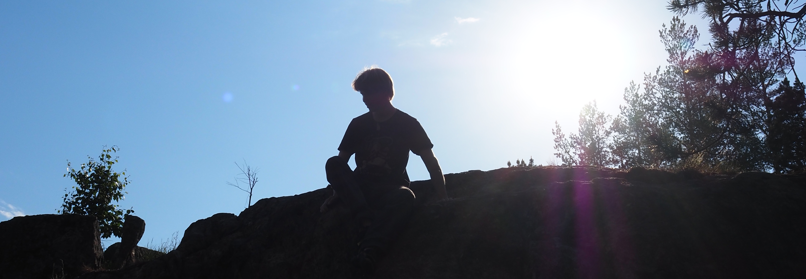

Ulkokiipeilijän 10 Käskyä

Mistä on kyse?
Aloittelevien (ja joidenkin kokeneimpienkin) ulkokiipeilijöiden on hyvä lukea nämä Ulkokiipeilijän n käskyä.
Uudelle kiipeilijälle saattaa olla haastavaa tietää miten cragilla käyttäydytään ja mitkä on ulkokiipeilyn ehdottomat "Dos and Don'ts".
Moni näistä jutuista on täsmälleen samoja kuin sisällä kiipeillessä, mutta osa on ulkokiipeilyspesifejä..
1. Pidä kiinni tuvallisuudestasi
Kiipeily on kivaa. Älä siis tee asioita mitkä riskeeraavat kykyäsi tehdä sitä lisää! Opi crimppaamaan ilman full-crimp otetta sormivammojen ehkäisemiseksi. Boulderoijien tulisi kiipeillä korkeammat reitit tarpeeksi monella pädillä ja spottaajalla. Älä ole tyhmä ja ota Honnoldista mallia.
Älä koskaan kiipeile "Free Solo", sillä mitä vaan voi tapahtua! Esimerkiksi: Aivastat kesken reitin ja lipeät. Liukastut, kun otteet olikin likaisemmat tai märemmät kuin mitä luulit. Tiput kun ote irtoaa yllättäen. Edellinen tapahtuu aivan liian usein, erittäin kiivetyilläkin reiteillä, joten ÄLÄ RISKEERAA TURVALLISUUTTASI.
Ota sormukset, kaulakorut ja muut korut pois ennen kiipeilyä. Pahimmassa tapauksessa voit menettää sormesi.
2. Pidä huolta ympäristöstäsi
Kiipeilysijainnit ovat yleensä luonnossa ja täten kovin kauniita. Pidetään se niin. "Take only pictures, leave only footprints" on hyvä mantra jonka mukaan elää. Harjatkaa niitä otteita! Helpottaa teidän ja seuraavan kiipeilijän elämää. Älä missään nimessä roskaa! Kaikki mitä tuot cragille on hyvä viedä pois, mukaan lukien biohajoavat asiat.
Ei tee hyvää jättää esim. hedelmien kuoria ympäristöön, sillä niiden hajoamisessa kestää paljon pidempään kuin luulisit niiden säilöntäaineiden takia. Tähän käskyyn kuuluu myös vessa-asiat: Älä tee tarpeitasi kivien läheisyyteen. Opi maan kääntämisen tekniikkaja mielellään käy kotona vessassa ennen cragille lähtöä.
Älä myöskään tee avotulta ilman tulipaikkaa tai maanomistajan lupaa.

3. Selvitä "Access" -asiat
Suurin osa kiipeilysijainneista on kiipeiltävissä täysin ongelmitta ja sen enempää sitä miettimättä. Selvitä kuitenkin, liittyykö sijainnin käyttöön jotain erityisvaatimuksia. Osa crageista sijaitsee yksityisellä omaisuudella, joka saattaa rajoittaa esim. parkkeeraamista tai muuten cragien käyttöä. Osa sijainneista on avoinna kiipeilylle vain osan vuodesta, esimerkiksi lintujen pesimisen takia.
Tämä käsky on aivan uskomattoman tärkeä, sillä pahimmassa tapauksessa jokin kiipeilylle tärkeä sijainti saattaa sulkeutua muutaman huonosti toimineen yksilön takia. Älä ole se yksilö! Selvitä access hommat ja toimi niiden mukaisesti!
4. Ota muut ihmiset huomioon
Kiipeillessä tulee usein muita ihmisiä vastaan, riippuen toki sijainnista. Ole muille ystävällinen, selitä harrastuksestasi ihmisille jotka eivät kiipeile. Tämä koskee erityisesti boulderoijia, sillä valtavat pädit saattavat herättää kysymyksiä. Tämä käsky liittyy myös muihin kiipeilijöihin. Jos kiipeilet suositulla sijainnilla, ota muut huomioon ja tee heille tarpeen mukaan tilaa.
Älä omi seiniä, vaan ota muut kiipeilijät avoimin sylin mukaan projektoimaan! Ota myös huomioon äänenvoimakkuutesi ja mahdolliset läheiset asuinalueet / ihmiset. Sendaaminen on kova juttu ja usein huutamisen arvoinen asia, mutta rauhoitu hieman, ettet aiheuta harmia alueen asukkaille. Jos tiedät reitin betan, älä lähde kysymättä sitä huutelemaan. Jos haluat auttaa ja jakaa, kysy haluaako kiipeiliä sitä ottaa vastaan!

5. Pidä huolta kivistä
ÄLÄ CHIPPAA, ÄLÄ MISSÄÄN NIMESSÄ MUOKKAA KIVEÄ. Se on suurin synti, jonka kiipeilijänä voit tehdä. Luonto tekee ajan saatossa mestariteoksensa, ja on meidän ihmisten työ nauttia niistä, niitä muokkaamatta. Löysät kivet voi ottaa pois, sillä ne irtoaa kuitenkin pian, mutta tämä onkin tälle säännölle ainoa poikkeus.
Suomesta löytyy erittäin rajoitetusti sedimenttikiviä, mutta niillä ei saa kiipeillä useampaan päivään sateiden jälkeen. Sedimenttikivet (esim. hiekkakivi, kalkkikivi) ovat huomattavasti magma- ja metamorfisia kiviä herkempiä, ja kastuminen saturoi huokoiset sedimenttikivet. Silloin niillä kiipeily kuluttaa niitä huomattavasti nopeammin, ja otteet rikkoutuvat helpommin.
Olen kuullut tapauksesta, jossa joku on kuivattanut otteita tulella. ÄLÄ TEE NIIN. Se hauristaa ja rikkoo kiveä, kivenlaadusta huolimatta. Tuuletin on paljon parempi ja hellempi vaihtoehto. Tähänkin käskyyn sisältyy se otteiden harjaus. HUOM! Jos teet tick-merkkejä seinään (merkitsemään otteiden sijaintia), muistathan harjata ne pois! Moni kiipeilijä haluaa selvittää reitin alusta ilman vihjeitä.

6. Älä välitä gradeista
Tämä sitoutuu luonnollisesti seuraavaan käskyyn. Ulkona gradet ovat usein huomattavasti tiukempia kuin sisällä. Monissa paikoissa gradet ovat jopa epäreilun-tuntuisen sandbagattyjä. Grade on vain numero, tärkeämpää on sen reitin tarjoama kokemus ja saavutus.
6. Pidä hauskaa
Kiipeilyn tulee olla hauskaa. Ulkokiipeily on usein huomattavasti vaikeampaa ja turhauttavampaa kuin sisäkiipeily, mutta samalla niistä syistä palkitsevampaa. Älä unohda ottaa tarpeen tullen taukoja kiipeilystä. Vaikeiden ja uusien gradejen saavuttaminen on huikea kokemus, mutta älä sido arvoasi kiipeilijänä numeroon. Kiipeämälläsi gradella ei ole mitään väliä, jos sinulla ei ole kivaa kiivetessä.

8. Pidä huolta itsestäsi
Älä kiipeile liikaa. Muista palautua kunnolla kiipeilyn jälkeen, eli syö suuri ja monipuolinen ateria, juo paljon nestettä ja nuku yö mahdollisimman hyvin. Ilman hyvää palautumista et etene kiipeilyssä fyysisesti, mutta myös tekninen puoli heikentyy. Älä kiipeile, jos sinulle on käynyt vaurio, sillä se parhaassa tapauksessa pidentää parannusaikaa ja pahimmassa tapauksessa vaurioituu pahemmin.
9. Ota sää huomioon
Katso aina etukäteen sääennusteita. Sateessa, tai heti sateiden jälkeen on usein epämiellyttävää, ellei ihan vaarallista kiipeillä. Eri cragit kuivuvat eri nopeuksilla, ja kuivumisajoista löytyy yleensä informattiota topoista, joten se kannattaa kurkata!
10. Levitä kiipeilyn pyhää sanomaa
Kiipeily on terveellistä ja uskomattoman hauskaa. Ota kaverisi mukaan kokeilemaan, ja saatat saada uuden elämänmittaisen kiipeilykumppanin!
